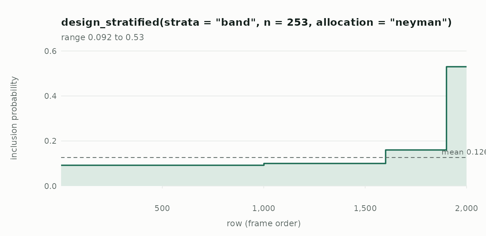

This walkthrough follows one job from start to finish: a retail chain
wants to know how much stock it lost last quarter across its 2,000
stores, and can afford to audit a sample of them. Along the way it
covers the six steps every use of drawn goes through —
size, design, check, draw, estimate, hand off.
The frame
What we know about every store before sampling: its region, its floor area, and what it lost the year before. What we want — this quarter’s loss — is only known for the stores we audit. Here the frame holds it too, so we can check the answers, but nothing below uses it except through the sample.
set.seed(2024)
N <- 2000
stores <- data.frame(
store = sprintf("S%04d", 1:N),
region = sample(c("north", "south", "east", "west", "central"), N,
replace = TRUE, prob = c(0.3, 0.25, 0.2, 0.15, 0.1)),
area = round(rlnorm(N, 7, 0.5))
)
region_rate <- c(north = 1.0, south = 1.4, east = 0.8, west = 1.9,
central = 1.1)
stores$last_year <- round(stores$area * region_rate[stores$region] *
rgamma(N, 4, 4) * 2)
stores$loss <- round(stores$last_year * rgamma(N, 12, 12) +
rnorm(N, 0, 200))
stores$loss <- pmax(stores$loss, 0)
# A size band from last year's loss: known for every store before sampling
stores$band <- cut(stores$last_year,
quantile(stores$last_year, c(0, 0.5, 0.8, 0.95, 1)),
labels = c("small", "medium", "large", "top"),
include.lowest = TRUE)
head(stores)
#> store region area last_year loss band
#> 1 S0001 west 1069 3557 3207 medium
#> 2 S0002 south 854 2425 2733 medium
#> 3 S0003 east 698 1273 981 small
#> 4 S0004 east 911 1163 1744 small
#> 5 S0005 south 998 1805 1856 small
#> 6 S0006 east 759 691 717 small1. How many stores?
Last year’s losses give a fair idea of the spread, and management
wants the total to within about 10%. plan_size() turns that
into a number of stores — allowing for audits that fail to complete, and
assuming no help from the design yet (deff = 1), which errs
on the safe side:
2. Choose a design, and ask it questions before drawing
Losses track store size far more than region, and last year’s loss is
known for every store, so stratify on the size band built from it.
Allocate by Neyman — more audits where losses vary most, which is among
the biggest stores — and set min_per_stratum = 2 so every
band is reachable and contributes to the variance.
plan <- design_stratified("band", n = p$n, allocation = "neyman",
allocation_by = "last_year", min_per_stratum = 2)
plan
#> <sampling design: stratified>
#> strata "band"
#> n 253
#> allocation "neyman"
#> allocation_by "last_year"
#> min_per_stratum 2
#> replace FALSE
#> na_rm FALSEA design is a value. Before drawing anything, ask it what each store’s chance of selection is:
pi <- inclusion_prob(stores, plan)
round(tapply(pi, stores$band, unique), 3)
#> small medium large top
#> 0.092 0.100 0.160 0.530The top band, where losses are largest and most variable, is sampled far more heavily than the small stores. That is Neyman allocation doing its job, and the design weights scale those stores back down in every estimate.

3. Draw
weights = TRUE attaches each audited store’s inclusion
probability (.prob) and design weight
(.weight, the number of stores it stands for), and
remembers the design so the sample can be estimated from later.
seed makes the draw reproducible without disturbing your
own random number stream.
audit <- draw(stores, plan, seed = 7, weights = TRUE)
nrow(audit)
#> [1] 253
head(audit[, c(".prob", ".weight", "store", "band", "region", "loss")])
#> .prob .weight store band region loss
#> 1 0.100 10.000000 S0014 medium south 2784
#> 2 0.100 10.000000 S0020 medium north 3897
#> 3 0.160 6.250000 S0030 large north 5133
#> 4 0.092 10.869565 S0034 small central 1605
#> 5 0.092 10.869565 S0038 small central 293
#> 6 0.530 1.886792 S0042 top central 61294. Check what you got
sample_summary(audit)
#> Sample of 253 from 2,000 (stratified design)
#> sampling fraction 0.126
#> design weights 1.887 to 10.87 (cv 0.445)
#>
#> by band:
#> group drawn in frame rate
#> small 92 1000 0.092
#> medium 60 600 0.100
#> large 48 300 0.160
#> top 53 100 0.530Every band is represented, no store is unreachable, and the weights vary by band exactly as the allocation intended.
5. Estimate
The total loss, with a standard error and a confidence interval:
ht_total(audit, "loss")
#> Horvitz-Thompson total (stratified design, n = 253)
#> estimate 6,077,725
#> se 137,591.4 (analytic)
#> 95% CI 5,806,734 to 6,348,717 (t, 249 df)
#> deff 0.186 (better than simple random sampling)
sum(stores$loss) # what we are trying to recover
#> [1] 6001703The interval uses Student’s t on the design’s degrees of freedom — audited stores minus strata — and the design effect says what the design bought: at 0.19, this sample carries about as much information as 1360 stores drawn at random.
The mean loss per store, and the share of stores losing more than 1,500, are the same machinery; a proportion is just the mean of a yes/no column:
ht_mean(audit, "loss")
#> Hajek mean (stratified design, n = 253)
#> estimate 3,038.863
#> se 68.79569 (analytic)
#> 95% CI 2,903.367 to 3,174.358 (t, 249 df)
#> deff 0.186 (better than simple random sampling)
ht_mean(audit, audit$loss > 1500)
#> Hajek mean (stratified design, n = 253)
#> estimate 0.6906522
#> se 0.02483253 (analytic)
#> 95% CI 0.6397439 to 0.7373204 (logit, t, 249 df)
#> deff 0.833 (better than simple random sampling)Estimates for each region come from the whole sample, not from cutting it into pieces — region was not a stratum, so how many audited stores land in each is itself random, and the standard errors account for that:
ht_total(audit, "loss", by = "region")
#> Horvitz-Thompson total by domain (stratified design, 95% CI, t, 249 df)
#> region n total se ci_lower ci_upper method
#> central 24 602577 125554 355294 849860 analytic
#> east 35 714858 134166 450614 979102 analytic
#> north 65 1533884 181660 1176098 1891671 analytic
#> south 86 2126499 190343 1751611 2501387 analytic
#> west 43 1099907 142941 818380 1381434 analyticWhat the design bought
Drawing the same number of stores many times under each design shows what the stratification was worth — and that stratifying on region, the obvious choice, would have bought almost nothing:
spread_of <- function(design) {
sd(vapply(1:200, function(i) {
ht_total(draw(stores, design, seed = i, weights = TRUE), "loss",
variance = "none")$total
}, numeric(1)))
}
round(c(simple = spread_of(design_simple(n = p$n)),
by_region = spread_of(design_stratified("region", n = p$n)),
by_band = spread_of(plan)))
#> simple by_region by_band
#> 289861 264939 141010deff() estimates that exchange rate from a single
sample, which is exactly what plan_size(deff = ) wants when
sizing next quarter’s audit:
plan_size(margin = target, sd = sd(stores$last_year), N = N,
target = "total", response = 0.95,
deff = deff(ht_total(audit, "loss")))
#> Sample size for a total
#> draw 53
#> to analyse 50 (after 95% response)
#> margin +/- 602380.2 at 95% confidence
#> assuming sd 2536, deff 0.186, N 2,000A design effect measured on one sample is itself an estimate, and the simulation above puts the true ratio of variances somewhat higher. A cautious planner rounds it up — but either way, the next audit can be a fraction of the size of this one for the same precision.
6. Hand off
drawn estimates totals, means and proportions. For
regression, calibration or quantiles, hand the sample to
survey; the design is expressed in survey’s
own terms, so the standard errors agree.
des <- as_svydesign(audit)
survey::svytotal(~loss, des)
#> total SE
#> loss 6077725 137591Where next
-
vignette("choosing-a-design")compares every design on one population and shows when each pays. - The articles on the package website explain how each variance estimator works, and walk through an audit sample and a spatially balanced field survey.